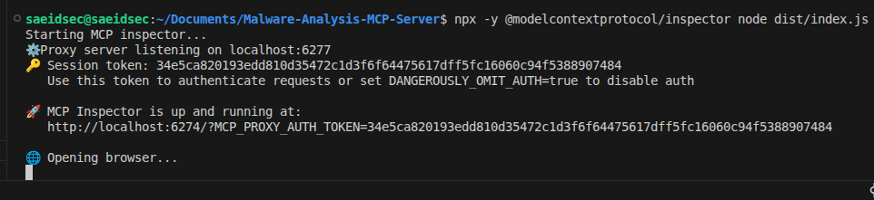
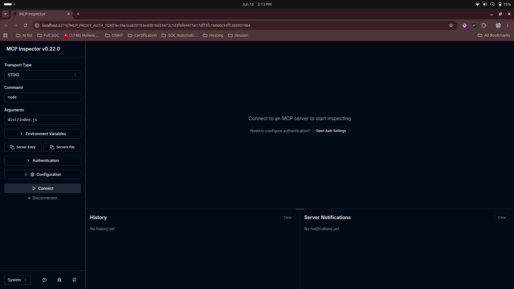
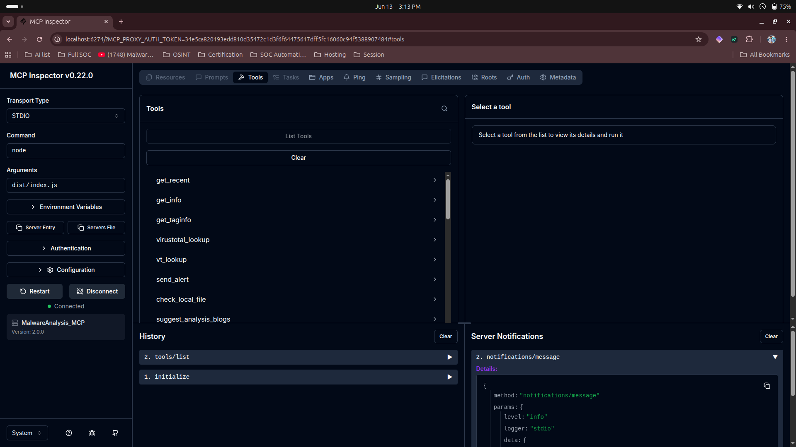
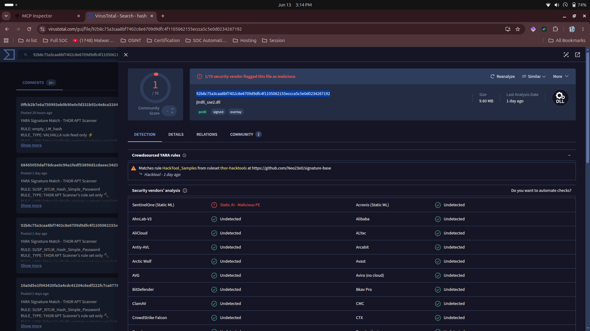
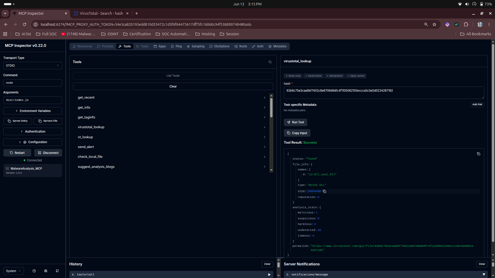
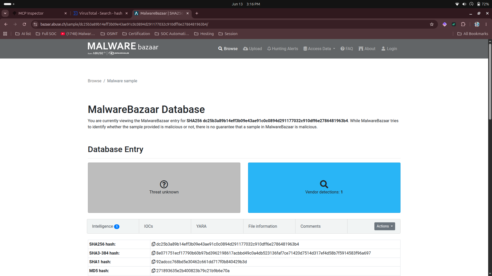
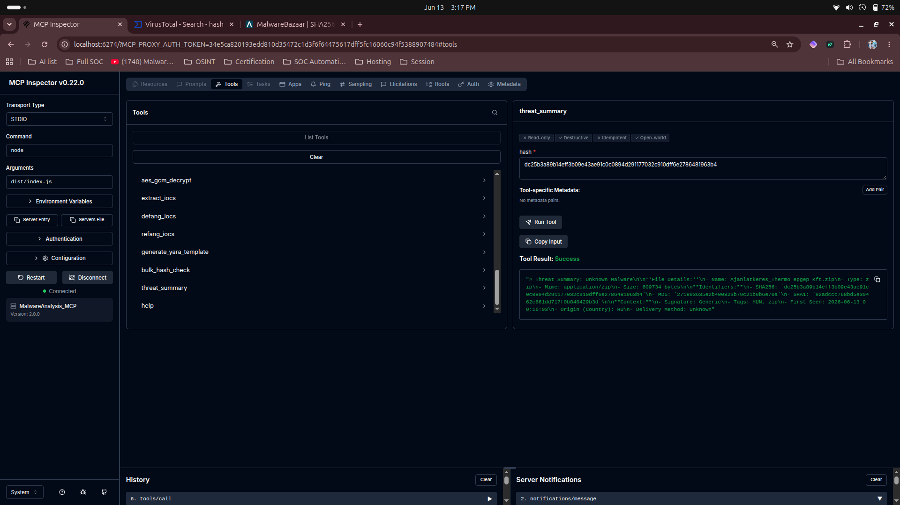

Project Overview
As AI models increasingly assist in security operations, giving them secure, contextual access to threat intelligence is crucial. This project implements an Anthropic Model Context Protocol (MCP) server that empowers AI models to autonomously aid in defensive malware research.
AI Integration
Exposes 15+ highly specific threat intelligence and offline analysis tools natively to AI assistants via the standard Model Context Protocol.
- Seamless Claude Desktop integration
- Context-aware AI investigation
- Automated querying of external platforms
Secure by Design
Built with a security-first mindset to prevent malicious interactions or accidental execution of malware samples.
- Provides metadata and IOCs only
- No live binaries downloading
- Strict path traversal protection
Core MCP Capabilities
The server integrates seamlessly with top threat intelligence databases, providing AI with instant context on files, hashes, and domains.
Available Tools
virustotal_lookup
Pulls VT V3 detection stats, reputation, and file types with built-in API rate limiting to protect free-tier keys.
get_info / get_recent
Queries MalwareBazaar for precise sample metadata by SHA256 or fetches the latest global malware entries.
extract_iocs & defang_iocs
Advanced extraction of IPs, Domains, URLs, and Hashes from unstructured text, paired with safe sharing mechanisms.
generate_yara_template
Commands the AI to automatically scaffold a starting point for YARA rules based on a sample's extracted exact signatures.
Equips the AI with an offline laboratory to perform complex encodings, crypto operations, and file analysis without exposing data to the internet.
Crypto: Secure AES-GCM encryption/decryption (PBKDF2 600k iterations) and secure hashing utilities.
Encoding: Robust Base64, Hex, and URL encoding/decoding, plus GZIP compression tools.
Analysis: Compute Shannon entropy to detect packed/obfuscated files, and generate raw Hexdumps for manual analysis.
Security Architecture
When granting an AI access to local files and external internet capabilities, strong guardrails must be in place. This server enforces strict security boundaries by design.
No Live Binaries
The get_file capability from threat intelligence sources is permanently disabled. The server cannot be tricked into executing or saving payload binaries to the host system.
Path Traversal Protection
Requests to check_local_file are resolved, normalized, and strictly checked against ALLOWED_SCAN_DIRS. The AI cannot hash arbitrary personal files.
Hardened Crypto & Memory Safety
AES implementation uses OWASP 2023 standards (PBKDF2 with 600,000 iterations). Memory-safe streaming is used for hashing local files, preventing gigabyte-scale OOM crashes.
API Rate Limiting
Protects free-tier API keys (like VirusTotal) from accidental exhaustion by looping LLMs, maintaining service stability.
Proof of Concept & Deep Dive Analysis
These captures demonstrate the MCP server in action during real-world AI-driven malware investigations. The AI seamlessly orchestrates multiple intelligence feeds and offline utilities to build a comprehensive threat profile.

MCP Initialization
Server connection and capability handshake.

MalwareBazaar Retrieval
Fetching exact sample metadata by SHA256.

VirusTotal Analysis
Pivoting to VT for community reputation & detection ratios.

IOC Extraction
Regex-based parsing and safe defanging of network indicators.

Crypto & Encoding
Offline manipulation of payloads via AES and Base64 routines.

YARA Generation
Scaffolding signature rules based on extracted byte sequences.

Threat Intelligence Synthesis
The final phase where the AI compiles the scattered findings into a coherent, actionable threat report, ready for dissemination to the SOC team or automated Telegram alerts.
Investigation Mechanics
The true power of this MCP server lies in chained tool execution. An AI assistant isn't limited to a single query. When provided with an initial indicator (like an obfuscated PowerShell script or an unknown hash), it can:
- Calculate the file's hash and query MalwareBazaar for known family signatures.
- Cross-reference the hash against VirusTotal to determine the detection ratio and behavior graphs.
- Execute an offline decoding capability to deobfuscate embedded payloads.
- Run extract_iocs to pull out Command & Control (C2) domains from the decoded payload.
This sequence happens entirely autonomously, governed by the strict path traversal and memory-safety guardrails of the server, accelerating the Tier-3 analyst workflow from hours to seconds.